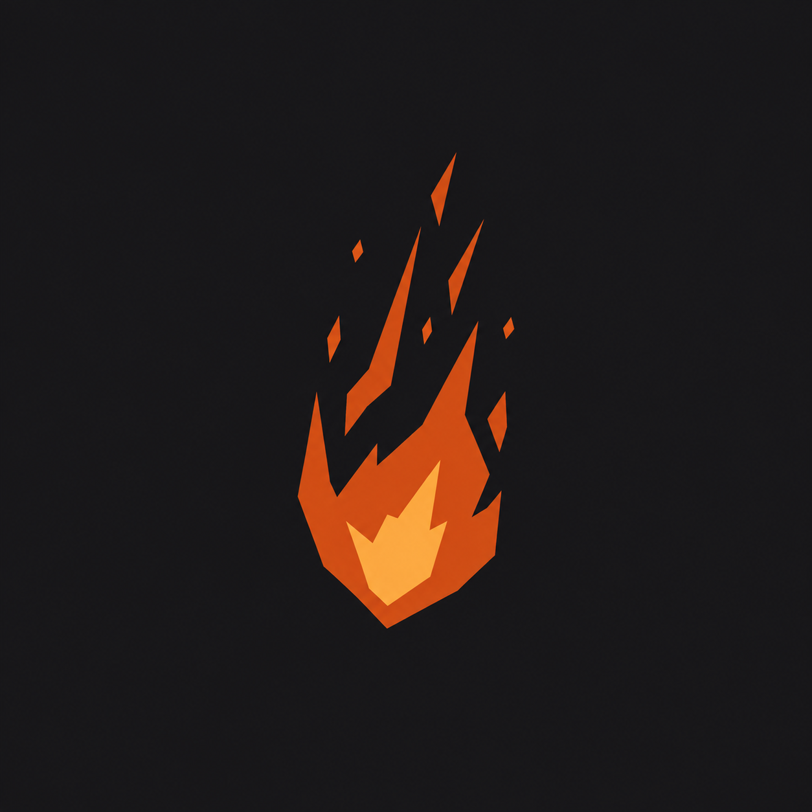

Jedna kartoteka. Wiele sposobów nauki.
Tekst, PDF, dokument Word albo transkrypcja z YouTube. Materiał zostaje punktem wyjścia do dalszej pracy.

EMBERFALLINTERACTIVEWróć do studiaProdukt edukacyjny
Własne materiały zamienione w prostszy sposób nauki: streszczenia, fiszki, quizy i rozmowa z treścią.
Kartoteka daje jedno miejsce na notatki, teksty, dokumenty i transkrypcje. Zamiast zaczynać naukę od zera, pracujesz na materiałach, które są już Twoje.
Po dodaniu treści wybierasz formę pracy. Krótkie podsumowanie porządkuje temat, fiszki pomagają wracać do pojęć, a quiz pokazuje, co warto jeszcze powtórzyć.
Tekst, PDF, dokument Word albo transkrypcja z YouTube. Materiał zostaje punktem wyjścia do dalszej pracy.
Buduj zestawy pytań i odpowiedzi, a potem wracaj do nich w swoim tempie.
Przerób materiał na pytania, sprawdź wynik i zobacz wyjaśnienia odpowiedzi.